Signs of life
No people yet; markers stand where they will. Until then: crates, kegs and sacks against walls; wood piles and washing in the yards; gardens and shade trees; a village green with a well; the garrison barracks with its drill gear; smoke from the chimneys; and an evening look with warm windows and light under the door lanterns.

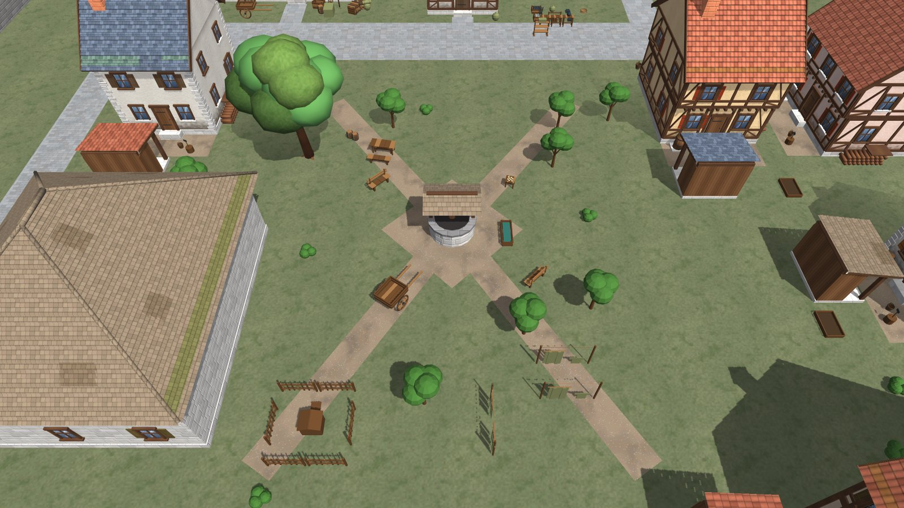

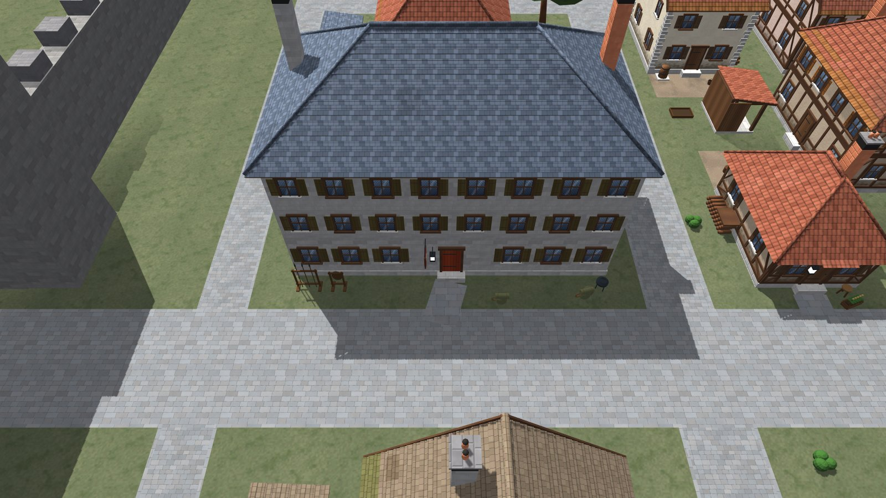

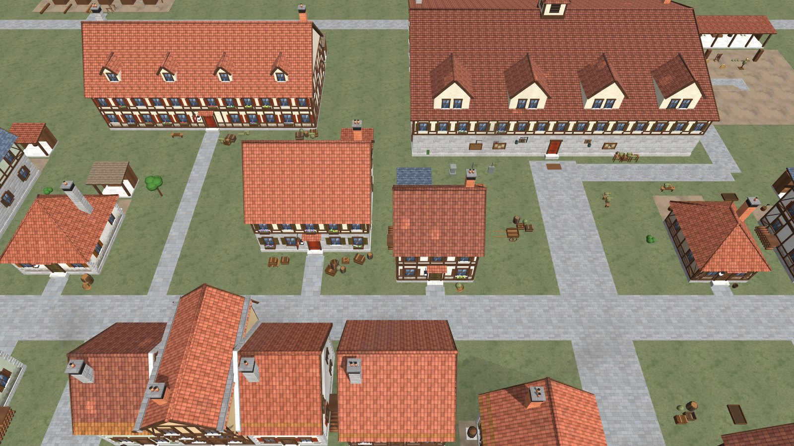

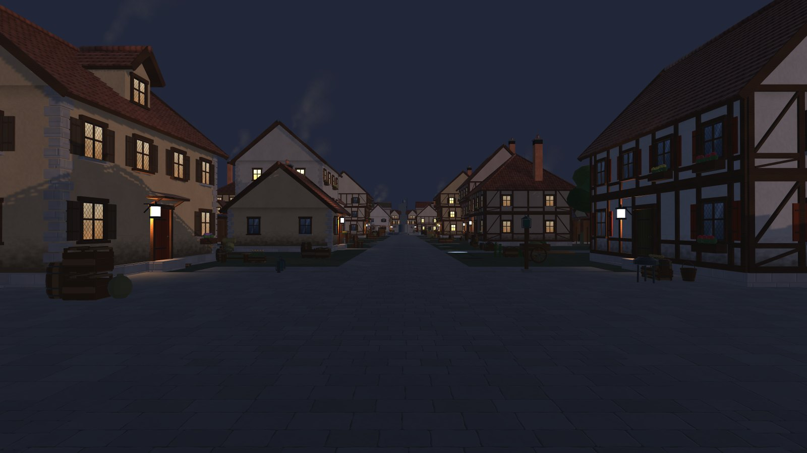
- Cost: the town went from 368,000 to about 1.6 million triangles. The Windows player ran the whole walk; frame time has not been measured.
- Changed from the earlier artist’s work: 73 small wall props on rebuilt houses are switched off (the new houses carry their own), four props that cut into walls were moved, and the coloured puddle and moss marks were recoloured.
- Not done: townsfolk, sound, interiors for the new buildings.
EarlierThe cathedral
Plain stone, no symbols yet: a tall nave with aisles and buttresses, a great east window and a tower over the door with a slate spire about 36 m high. It stands at the end of the residential lane, so the tower closes the view up the street. Its door now leads inside: see the cathedral. The sanctuary nearby keeps its footprint with a new porch and a bell tower you can now see.

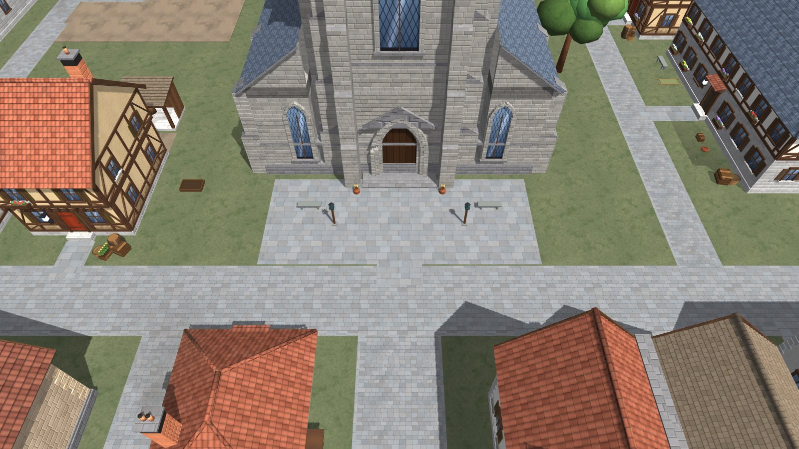

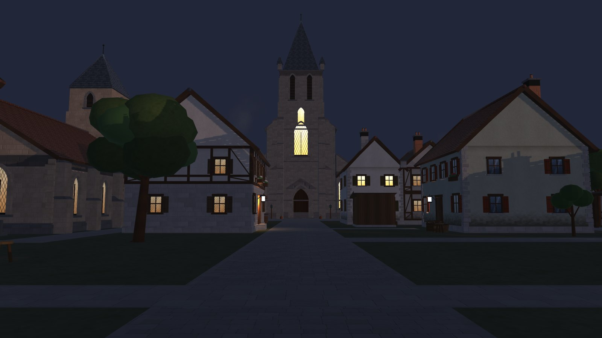
EarlierA building kit
One generator builds every house from a short description: plaster, half-timber or stone walls; tiled gable, hip and lean-to roofs; dormers, chimneys, shutters, window boxes, shopfronts with awnings, lanterns, back doors and outshots; terraces that share walls. The textures were drawn by script for this town, with damp at the foot of walls and soot on chimney tops.

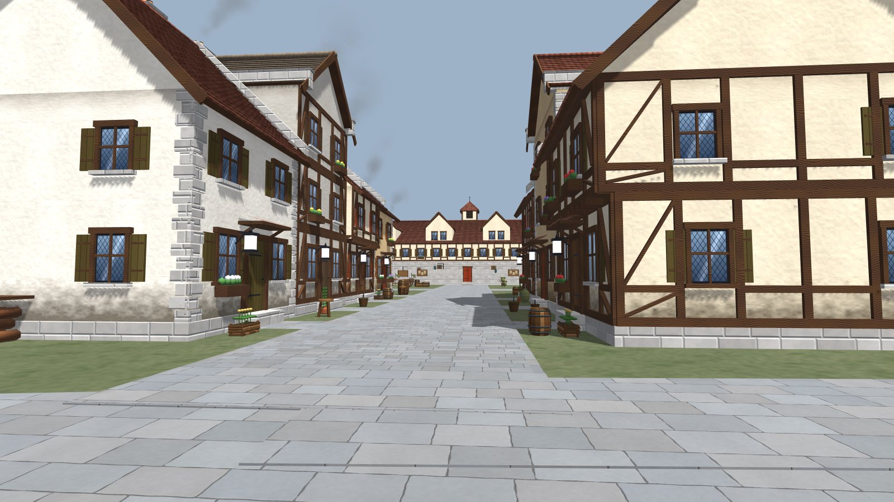

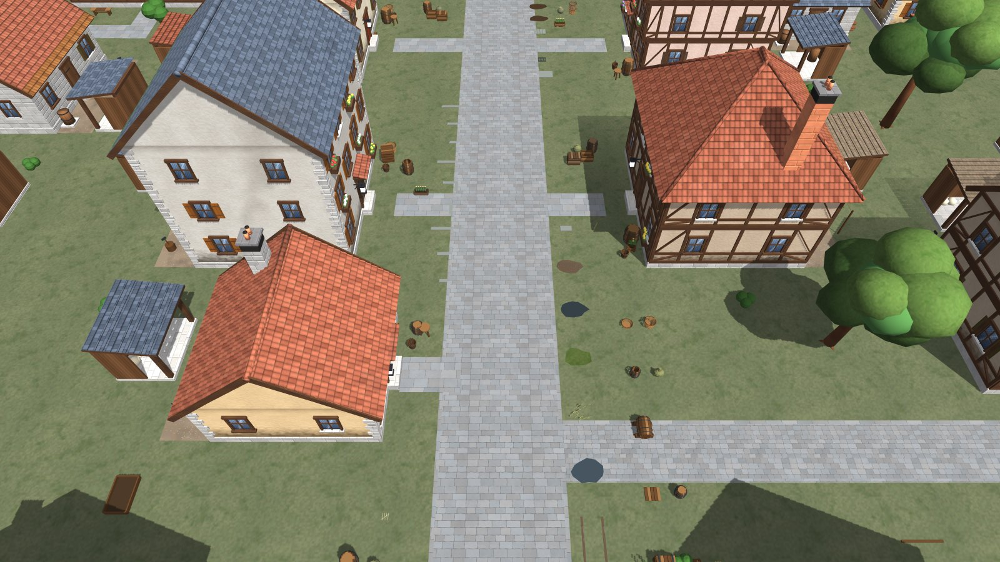
EarlierBefore and after
Same walls, same streets, same doors. Every old box was replaced on its exact footprint; 153 buildings are new.

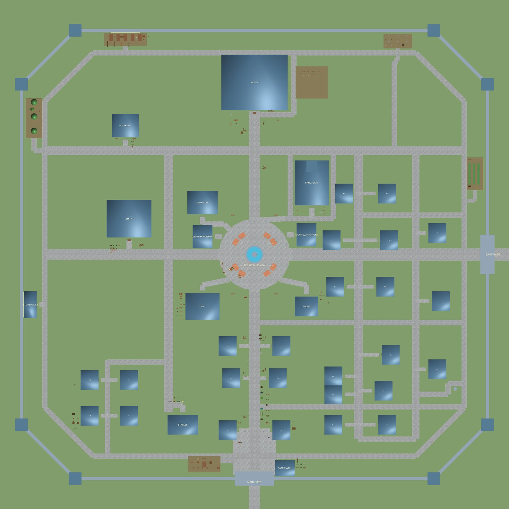

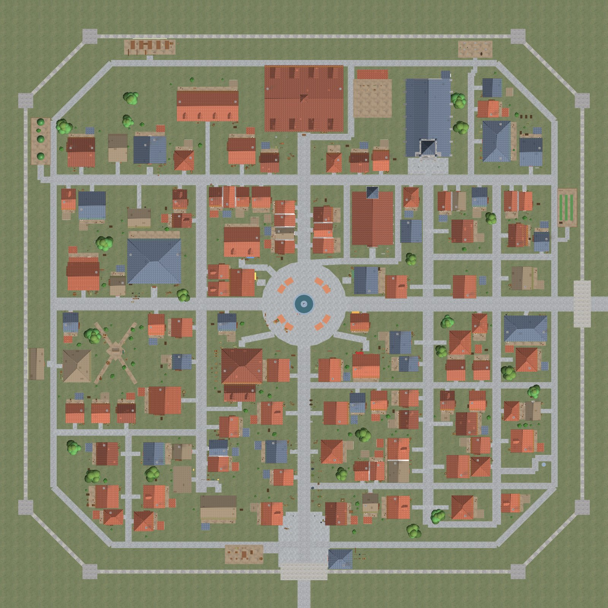

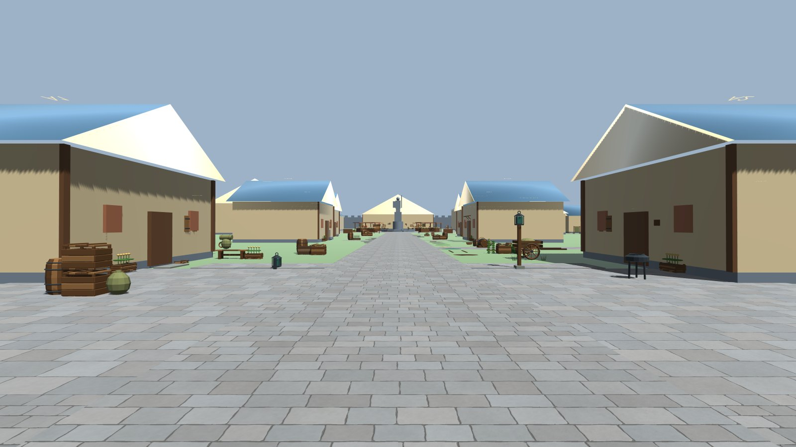

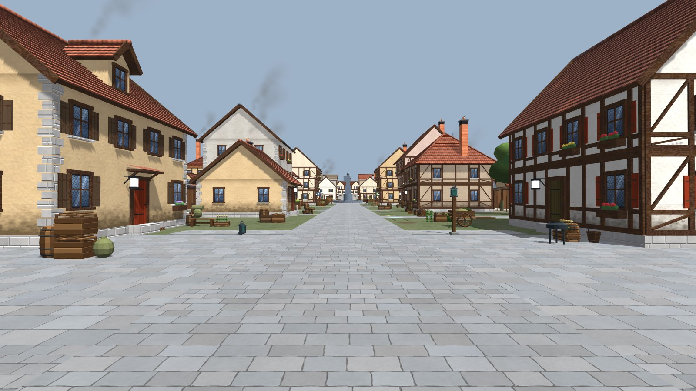

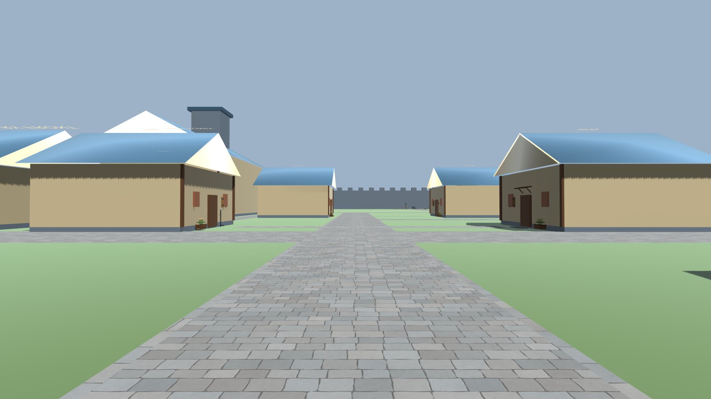


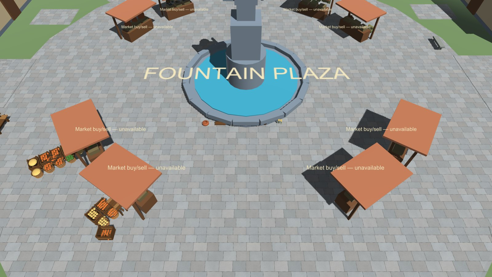

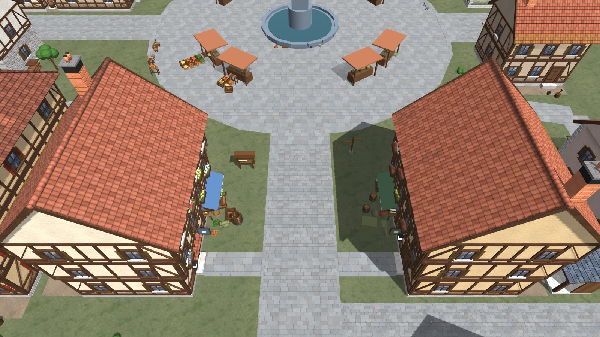